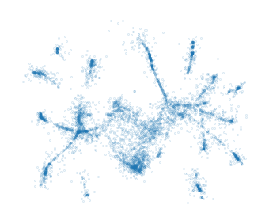
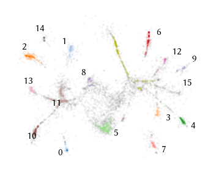
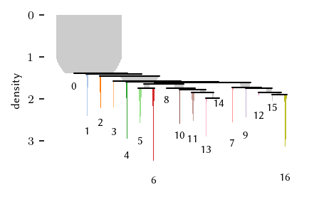
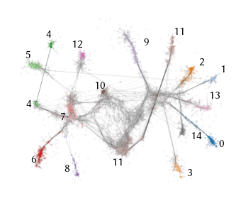
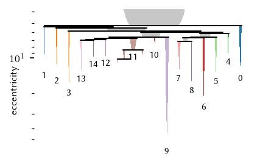

Example: Single Cell Gene Expression Trajectories
Packer et al. demonstrated how single-cell RNA sequencing uncovers trajectories relating to the cell development in the C. elegans. These trajectories can be seen as a branching structure that we can detect with FLASC. In this notebook, we show how HDBSCAN* and FLASC can be applied on this data set.
Setup
[1]:
%load_ext autoreload
%autoreload 2
[2]:
import numpy as np
import pandas as pd
import matplotlib.pyplot as plt
from hdbscan import HDBSCAN
from flasc import FLASC
from umap import UMAP
import matplotlib.collections as mc
from sklearn.preprocessing import normalize
from _plotting import *
%matplotlib inline
palette = configure_matplotlib()
Data
The dataset and pre-processing is described in the documentation of Monocle 3. In essence, different measuring batches are aligned, so that measuring noise is reduced. Then, the first 50 PCA coordinates are taken to reduce noise and focus on the main patterns. We prepared a file with these 50 PCA coordinates:
[3]:
df = pd.read_csv('./data/elegans_preprocessed.csv', index_col=0)
df.shape
[3]:
(6188, 50)
Like Narayan et al., we visualize the data using densMap, a variant of UMAP that tries to preserve local densities in the projected coordinates. Because HDBSCAN* does not support the cosine distance without reverting to an inefficient quadratic implementation, we normalize the rows so that the Euclidean distance captures the angle between rows. Essentially computing the Angular distance rather than the Cosine distance.
This projection is used for visualisation purposes only, all analyses are run on the 50-dimensional feature space.
[5]:
X = normalize(df, norm='l2')
X2 = UMAP(n_neighbors=20, min_dist=0.2, densmap=True).fit_transform(X)
sized_fig()
plt.scatter(X2.T[0], X2.T[1], 0.2, alpha=0.3, marker='.')
frame_off()
plt.subplots_adjust(0, 0, 1, 1)
plt.savefig('./images/elegans_densmap.png', dpi=300)
plt.show()

HDBSCAN*
Running HDBSCAN* finds 17 clusters containing 36.7% of the data points. The clusters appear to correspond to the branches, indicating that the developmental end-states contain a local density maximum. Many points, however, are classified as noise, indicating that this segmentation does not capture the structure very well.
[6]:
c = HDBSCAN(min_cluster_size=20).fit(X)
[7]:
mask = c.labels_ == -1
sized_fig()
plt.scatter(X2[mask, 0], X2[mask, 1], 0.2, color=(0.2, 0.2, 0.2), alpha=0.1, marker='.')
plt.scatter(X2[~mask, 0], X2[~mask, 1], 0.2, c.labels_[~mask], alpha=0.3, vmax=20, cmap='tab20', marker='.')
# Print cluster labels
center = np.mean(X2, axis=0)
centroids = [
np.mean(X2[c.labels_ == i], axis=0)
for i in range(c.labels_.max())
]
quadrant = [
(ctr[0] <= center[0]) + 2 * (ctr[1] <= center[1])
for ctr in centroids
]
coords = [
[ctr[0] + 1.2 * (1 if q % 2 == 0 else -1), ctr[1] + 1 * (1 if q < 2 else -1)]
for q, ctr in zip(quadrant, centroids)
]
for l, ctr in enumerate(coords):
plt.text(ctr[0], ctr[1], f'{l}')
frame_off()
plt.subplots_adjust(0, 0, 1, 1)
plt.savefig('./images/elegans_clusters.png', dpi=300)
plt.show()

We adapt the CondensedTree plotting logic to colour segments by the selected cluster, rather than the number of points they contain. (Cell hidden in docs)
The resulting visualisation showhs that the branches are detected as distinct subgroups by HDBBSCAN*. However, the condensed tree does not describe the trajectories. In other words, the branching structure or developmental trajectories are not captured.
[9]:
sized_fig()
plot_icicles(
c, c.condensed_tree_,
leaf_separation=0.2,
selection_palette=plt.get_cmap("tab20").colors,
)
plt.subplots_adjust(0.12, 0.1, 0.99, 0.95)
plt.savefig("./images/elegans_cluster_tree.png", dpi=300)
plt.show()

FLASC
Based on the HDBSCAN* clustering, we interpret this data to be a single cluster. To achieve this, we enable the allow single cluster flag and set the cluster selection epsilon to \(1/1.4\). This epsilon value will also be the threshold for points to be considered as noise. Some points have to be classified as noise, otherwise they bridge the gaps between the trajectories, hindering their detection as branches.
Because all data points are now detected as a single cluster, the number of edges in the full cluster approximation graph is expected to be quite large, as the cluster spans quite a large density range. Therefore, we use the core approximation graph to detect the branches.
[10]:
t = 1/1.4
c = FLASC(
min_samples=5,
min_cluster_size=20,
cluster_selection_epsilon=t,
allow_single_cluster=True,
branch_detection_method='core',
).fit(X)
graph = c._cluster_approximation_graphs[0]
mask = c.labels_ != -1
parents = graph.T[0].astype('int')
children = graph.T[1].astype('int')
edges = list(zip(
zip(X2[children, 0], X2[children, 1]),
zip(X2[parents, 0], X2[parents, 1])
))
As expected, FLASC finds the trajectories as branches. Interestingly, the 5-NN graph indicates connectivity that is not obvious from the densMap projection.
[27]:
palette = plt.get_cmap('tab20').colors
node_colors = [palette[l%20] for l in c.labels_ if l != -1]
sized_fig()
plt.scatter(X2[~mask, 0], X2[~mask, 1], 0.2, color=(0.2, 0.2, 0.2), alpha=0.1, marker='.')
plt.scatter(X2[mask, 0], X2[mask, 1], 0.2, node_colors, marker='.', alpha=0.3)
lc = mc.LineCollection(edges, linewidths=0.2, color=(0.2, 0.2, 0.2), zorder=-1, alpha=0.1)
plt.gca().add_collection(lc)
# Print cluster labels
center = np.mean(X2, axis=0)
centroids = [
np.mean(X2[c.labels_ == i], axis=0)
for i in range(c.labels_.max())
]
quadrant = [
(ctr[0] <= center[0]) + 2 * (ctr[1] <= center[1])
for ctr in centroids
]
coords = [
[ctr[0] + 1.2 * (1 if q % 2 == 0 else -1), ctr[1] + 1 * (1 if q < 2 else -1)]
for q, ctr in zip(quadrant, centroids)
]
for l, ctr in enumerate(coords):
if l == 4:
plt.text(ctr[0] + 1.5, ctr[1] + 3.5, f'{l}')
plt.text(ctr[0] - 1, ctr[1] - 5, f'{l}')
elif l == 11:
plt.text(ctr[0] + 2.5, ctr[1] + 8, f'{l}')
plt.text(ctr[0] - 5, ctr[1] - 8, f'{l}')
else:
plt.text(ctr[0], ctr[1], f'{l}')
frame_off()
plt.subplots_adjust(0, 0, 1, 1)
plt.savefig('./images/elegans_branches.png', dpi=300)
plt.show()

Again, we adapt the CondensedTree code to draw a branch condensed tree coloured by the selected branches:
The resulting branch condensed hierarchy better describes the cluster’s shape. However, it only contains the most-eccentric connections between the branches.
[29]:
sized_fig()
BranchCondensedTree(
c._cluster_condensed_trees[0],
c.labels_,
c.cluster_points_[0],
c.branch_selection_method,
c.allow_single_branch,
c.branch_selection_persistence
).plot(
colorbar=False,
leaf_separation=0.2,
select_clusters=True,
label_clusters=True,
selection_palette=palette
)
plt.yscale('log')
# plt.ylim(0.2, 0)
# plt.yticks([0, .1, .2, .3])
plt.ylabel('eccentricity', labelpad=-7, y=0.4)
plt.subplots_adjust(0.13, 0.07, 1, 0.95)
plt.savefig('./images/elegans_branch_tree.png', dpi=300)
plt.show()
